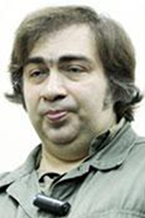

Our societies do not lead a real life.
They are constantly reproducing pseudo-ideals,
imaginary figures, images, dreams which have
already been materialized and is around
us and which, in our fatal vacancy,
we need to revive again and again.
 Elmir Mirzoev
Azerbaijan
Born in Baku, Azerbaijani composer of mostly orchestral, chamber and vocal pieces that have been performed very successfully in different festivals in Azerbaijan, CIS countries, Europe, Mexico, Mongolia and Japan, he is also active in the promotion of new music and the organizer of the contemporary and the traditional music festivals in Azerbaijan. Organized 11 international cultural projects since 1996.
Studied at the Azerbaijan State Conservatory (now the Baku Music Academy) from 1989-94, in the composition class of Faraj Karaev (post-graduated in 1999). In 1994, he participated in an international composition course, led by James Dillon and Ole Lutzhow-Holm at the University of Gothenburg and in 1995; he participated in the Musik aus Aserbaidschan Festival in Winterthur (Switzerland).
Also in 1995, he served as an assistant to Faraj Karaev at the Baku Music Academy, and he became the Artistic Director of the Initiative Center of Contemporary Music - Ensemble SoNoR. From 1995-99, he studied in the post-graduate course with Faraj Karaev, and in 1996-97, he received two commissions from Pro Helvetia, a Swiss cultural foundation, and subsequently embarked on a concert tour with other Azerbaijani composers in Switzerland. Since 1998, he has taught in the composition department at the Baku Music Academy. In 1999 participated in the V International Young Composers Meeting in Apeldoorn/Holland, hosted by Louis Andriessen and Michael Smetanin, with Ensemble de Ereprijs. In 2006 he was in Stockhausen Courses in Kurten.
In addition, he was one of the six composers featured in the New Music Marathon, with author's concert and workshop in Prague/Czech. He has also workshops, master-classes and lectures in Tbilisi State Conservatory/Georgia (1999), Uzbekistan Composers Union (2000), Krakow University/Poland (2001), Dresdner Zentrum fur zeitgenossische Musik/Germany (2003), Van University/Turkey (2004).
Studied at the Azerbaijan State Conservatory (now the Baku Music Academy) from 1989-94, in the composition class of Faraj Karaev (post-graduated in 1999). In 1994, he participated in an international composition course, led by James Dillon and Ole Lutzhow-Holm at the University of Gothenburg and in 1995; he participated in the Musik aus Aserbaidschan Festival in Winterthur (Switzerland).
Also in 1995, he served as an assistant to Faraj Karaev at the Baku Music Academy, and he became the Artistic Director of the Initiative Center of Contemporary Music - Ensemble SoNoR. From 1995-99, he studied in the post-graduate course with Faraj Karaev, and in 1996-97, he received two commissions from Pro Helvetia, a Swiss cultural foundation, and subsequently embarked on a concert tour with other Azerbaijani composers in Switzerland. Since 1998, he has taught in the composition department at the Baku Music Academy. In 1999 participated in the V International Young Composers Meeting in Apeldoorn/Holland, hosted by Louis Andriessen and Michael Smetanin, with Ensemble de Ereprijs. In 2006 he was in Stockhausen Courses in Kurten.
In addition, he was one of the six composers featured in the New Music Marathon, with author's concert and workshop in Prague/Czech. He has also workshops, master-classes and lectures in Tbilisi State Conservatory/Georgia (1999), Uzbekistan Composers Union (2000), Krakow University/Poland (2001), Dresdner Zentrum fur zeitgenossische Musik/Germany (2003), Van University/Turkey (2004).